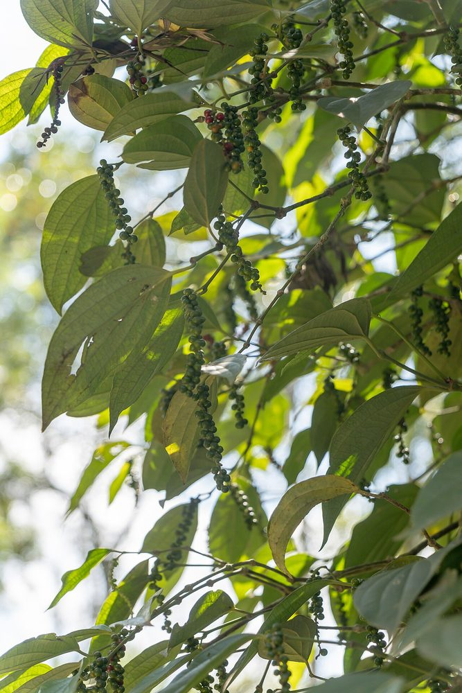
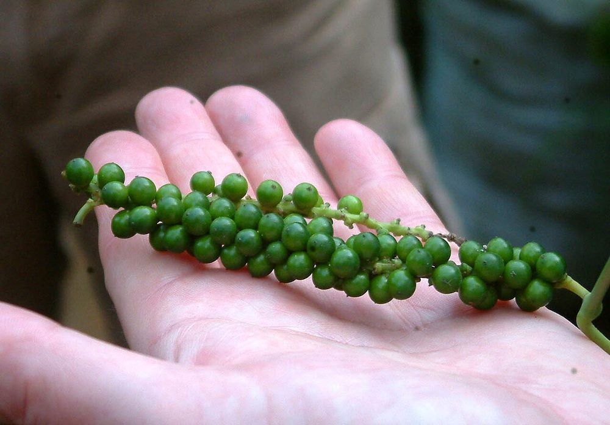

Épice
Poivre noir
Piper nigrum — liane à tuteurer
- Cycle entrée en production 3 à 4 ans
- Mise à jour 2026-10-21
- Niveau de confiance faible

Présentation et utilisations
Liane tropicale conduite sur tuteur, produisant des baies récoltées vertes puis séchées (poivre noir) ou dépulpées (poivre blanc). La production ivoirienne est marginale : la question du débouché précède celle de la technique.
Climat et sols
Chaleur, humidité régulière, ombrage léger. Sol profond, riche, drainé ; le poivre craint l'excès d'eau et la sécheresse. Un tuteur vivant (arbre légumineux) ou mort est indispensable.
Variétés adaptées
Le poivre cultivé est Piper nigrum ; plusieurs cultivars existent en Asie, leur disponibilité en Côte d'Ivoire n'est pas documentée ici. Avant de planter, identifier une source de matériel végétal sain et un acheteur.
Calendrier cultural
Plantation en saison des pluies ; entrée en production après 3 à 4 ans. Récolte étalée sur plusieurs mois une fois la liane productive. Aucun calendrier local officiel n'est disponible.
Préparation du terrain
Trous profonds, sol ameubli, matière organique. Installation des tuteurs avant ou en même temps que les plants. Prévoir un ombrage temporaire si la parcelle est très exposée.
Semis et plantation
Plantation de boutures enracinées sélectionnées sur des lianes productives et saines. Éviter le semis de graines (variabilité et lenteur). Attacher la jeune liane au tuteur dès la plantation.
Entretien, fertilisation, irrigation
Tuteurage et palissage, taille de formation, paillage, apports organiques réguliers. Le désherbage doit être manuel autour du pied : les racines sont superficielles.
Maladies, ravageurs et prévention
Les maladies racinaires (pourritures) sont la principale cause d'échec : drainage et modération des arrosages sont décisifs. Surveiller aussi les insectes piqueurs. Aucun seuil ni produit autorisé documenté ici.
Récolte et post-récolte
Récolter les épi lorsqu'une baie ou deux rougissent ; pour le poivre noir, sécher les baies entières ; pour le blanc, dépulper avant séchage.
Conservation et transformation
Séchage jusqu'à humidité faible, stockage à l'abri de la lumière et de l'humidité. Le poivre perd son arôme s'il est stocké chaud ou moulu trop tôt.
Coûts, rendements et débouchés
Débouchés : épiceries fines, restauration, export. Attention : aucun prix de référence ivoirien n'est publié régulièrement et la filière locale est très peu structurée. Ne pas planter sans acheteur identifié.
Tutoriel étape par étape
- 1. Vérifier le débouché
Trouvez vos débouchés (épiceries, restaurants, exportateurs) avant de planter : c'est ce qui limite cette culture en Côte d'Ivoire.
- 2. Préparer tuteurs et trous
Installez des tuteurs solides avant de planter, et faites des trous profonds avec de la matière organique.
- 3. Planter des boutures saines
Plantez des boutures saines, déjà enracinées, et attachez-les au tuteur dès la mise en terre.

Rainer Halama · CC BY-SA 4.0 · Wikimedia Commons - 4. Entretenir l'ombrage et l'humidité
Paillez, gardez un peu d'ombre, drainez : les racines ne doivent jamais baigner dans l'eau.
- 5. Récolter et sécher
Cueillez les épis mûrs au fur et à mesure, séchez vite à l'ombre ventilée, stockez étanche.

Sunil Elias · CC BY-SA 3.0 · Wikimedia Commons
Sources, vérification et limites
- Base de connaissances interne · knowledge/agronomie.md (mentions générales sur les épices) (consulté le 2026-10-21)
Limites de cette fiche. Aucune donnée ivoirienne vérifiée sur les variétés, les rendements, les prix ni les acheteurs. Cette fiche doit être complétée par une enquête de marché avant d'être utilisée pour décider un investissement.
Dernière mise à jour : 2026-10-21. Les prix, rendements et calendriers locaux ne sont mentionnés que lorsqu'ils sont documentés ; dans le doute, la fiche le dit.